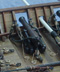
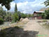

|
|
||||
|
|  
 Интернет для начинающих
|
ГЛАВНАЯ |
Добавленно 17.04.2009На этой странице я хочу Вам представить модель галеры «Шебека»(SZEBEKA).
Добавленно 23.06.2008
Добавленно 23.06.2008
Добавленно 23.06.2008
Добавленно 23.06.2008
Добавленно 23.06.2008Фотографии Майли-Сая 2008, смотреть далее (12 фото).
Добавленно 23.06.2008
Добавленно 04.05.2008
Добавленно 11.03.2008
Добавленно 02.04.2008Добавленно 05.03.2008
Добавленно 24.03.2008Добавленно 18.03.2008
Добавленно 08.04.2008Это страничка для баннеров, на ней Вы можете разместить Вашу кнопку. Типа бесплатной партнёрской программы.
Читать далее Добавленно 11.03.2008 Майли-Сай…
После того как слышишь это слово, вспоминается о чём-то родном, тёплом. Маленькая зелёная „Швейцария“, где весной всё было покрыто зеленью и цветущими садами, в конце лета и начале осени ...
Майли-Сай…
После того как слышишь это слово, вспоминается о чём-то родном, тёплом. Маленькая зелёная „Швейцария“, где весной всё было покрыто зеленью и цветущими садами, в конце лета и начале осени ...
Добавленно 04.03.2008
Добавленно 06.03.2008
На данном этапе развития сайт не полон, и скорее всего, полная версия будет совсем другой, но самое главное начало. В перспективе, создать интересный и полезный для Вас сайт, который будет регулярно посещаться и иметь своих пользователей. Пожалуйста оставте мне свой коммент, а лучше дельный совет, по улучшению этой допотопной страницы. Только пожалуйста не грубите. В данный момент, сайт разрабатывается в техническом плане, поэтому на содержание не стоит сильно обращать внимание. Со временем это изменится. |
Наверх ГЛАВНАЯ Copyright Vadim Markov © 2008Частичная или полная перепечатка или иное использование материалов сайта допускается только с разрешения автора. Копирование материалов сайта разрешается только с использованием активной ссылки на www.magnum77.de. По вопросам использования наших статей обращайтесь по электронной почте. |
|


 Москва с высоты птичьего полёта.
Москва с высоты птичьего полёта. Курьёзы, смотреть далее (8 фото).
Курьёзы, смотреть далее (8 фото). Фотографии Моделей бронетехники, самолётов и вертолётов, смотреть далее (77 фото).
Фотографии Моделей бронетехники, самолётов и вертолётов, смотреть далее (77 фото). Фотографии Киргизии 2008, смотреть далее (40 фото).
Фотографии Киргизии 2008, смотреть далее (40 фото). World Tunning Messe 2008, смотреть далее (133 фото).
World Tunning Messe 2008, смотреть далее (133 фото). Приколы, смешные и не очень, смотреть далее (14 фото).
Приколы, смешные и не очень, смотреть далее (14 фото).
 Подписанные фотографии, сделанные в радиусе полтора км от моего дома, смотреть далее (35 фото).
Подписанные фотографии, сделанные в радиусе полтора км от моего дома, смотреть далее (35 фото).
 World Tunning Messe 2005, смотреть далее (32 фото).
World Tunning Messe 2005, смотреть далее (32 фото). Карнавал в Германии, смотреть далее (28 фото).
Карнавал в Германии, смотреть далее (28 фото). Как приготовить шашлык зимой, смотреть далее (8 фото).
Как приготовить шашлык зимой, смотреть далее (8 фото).
 У вас есть замечания/предложения?
У вас есть замечания/предложения?